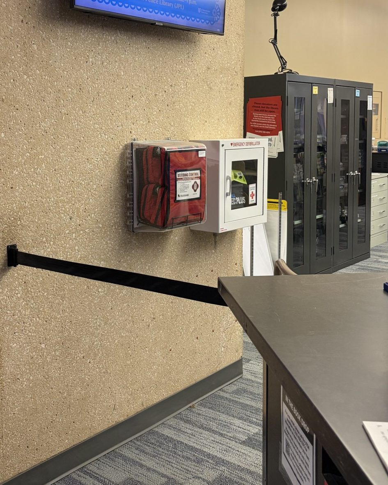

Resources
Quick background on bleeding control. None of this replaces a hands-on class.
If someone is bleeding right now, call 911. The dispatcher can talk you through what to do.
Why it matters
Uncontrolled bleeding is the number one cause of preventable death after an injury. A person can die from blood loss in as little as five minutes, which is often faster than an ambulance can get there. The people already on scene are the ones who can buy that time.
Sources: STOP THE BLEED®, Penn State Health.
The ABCs
- Alert: call 911 and make sure the scene is safe for you.
- Bleeding: find the injury and look for bleeding that's spurting, pooling or soaking through clothes.
- Compress: firm direct pressure, packing the wound, or a tourniquet on an arm or leg.
What's in a bleeding control kit
Kits vary, but most public ones include some mix of:
- A tourniquet
- Gauze for packing wounds, sometimes treated with a clotting agent
- A pressure bandage
- Gloves and trauma shears
- A marker, to write the time on the tourniquet
Kits at UTSA
UTSA's bleeding control kits are mounted with the AEDs in campus buildings. Most people have never noticed them: 73% of our trainees weren't at all familiar with where they are. Next time you pass an AED, look for the kit next to it.
We're also building an unofficial campus kit finder. It's an early prototype, not affiliated with or approved by UTSA, and its locations are approximate. Don't rely on it in an emergency.
Learn more
- stopthebleed.org: the national STOP THE BLEED® program
- How our classes work
- Common questions
